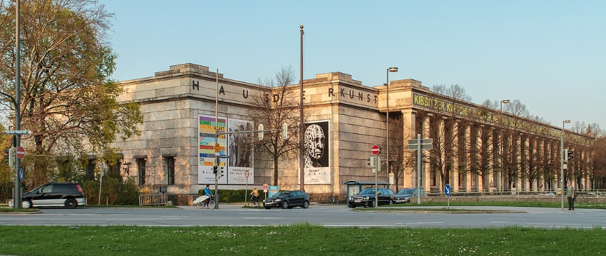
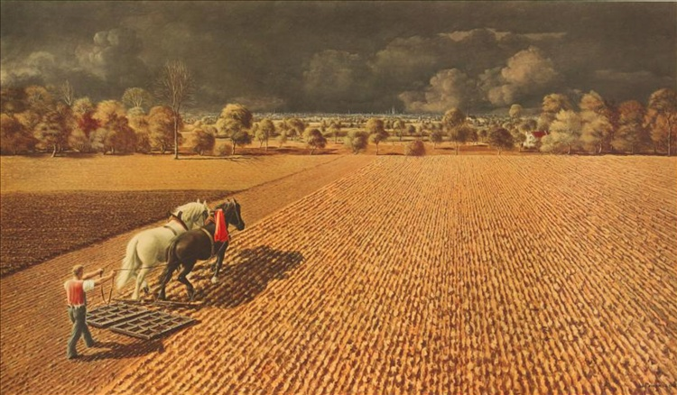

🔒 Archival Gate: Multimodal Taste Evaluation Loop
To unlock the secondary analytical infrastructure, quantitative text metrics, and 3D spatial models of this project, you must complete a 4-stage programmatic curation track. Select the style variant that aligns closest with your immediate design preferences. Previous choices will lock in place as you descend into the deep archive.
II. Unveiling the Curation: Comparative Specimens
Below are the four paired specimens you evaluated—presented without labels during the blind test. Each left cell shows the regime-sanctioned canonical style; each right cell shows the suppressed avant-garde alternative. Click the button on any card to jump to its full historical analysis at the bottom of the page.
III. Text-Mining Analysis: The Language of Aesthetic Exclusion
The visual suppression documented above did not emerge from raw violence alone — it was first constructed in language. This section presents a computational text-mining analysis of two primary sources: Hitler's 1937 Reichstag address (15,649 words) and Albert Speer's 1936 architectural essay (2,139 words). By identifying how each author deployed shared ideological vocabularies, we can trace the linguistic infrastructure that made the exclusion of Modernist art seem not like censorship, but like natural order.
Methodology: Semantic Cluster Analysis
- Corpus: Hitler's Reichstag speech (Jan. 30, 1937) & Speer's essay "The Führer as Builder" (1936), both sourced from the German Propaganda Archive, Calvin University. Texts were tokenized, lowercased, and normalized.
- Semantic Clustering: 120 keywords were hand-coded into six ideological clusters — Aesthetic Order, Eternal Permanence, Power & Authority, Biological Language, Art & Architecture, and Exclusion Language. Raw frequencies were normalized per 1,000 words to enable fair comparison across texts of different lengths.
- Collocation Analysis: The 8-word window surrounding art/building/culture terms was extracted to reveal what conceptual neighbors each author attached to the domain of art — exposing the ideological framing hidden within seemingly aesthetic language.
Finding 1 — Semantic Cluster Comparison (per 1,000 words)
Hitler dominates biological and political language; Speer concentrates almost exclusively on art, architecture, and permanence. Together, they constitute a division of ideological labor: Hitler defines who belongs; Speer builds the stone symbols of that belonging.
Finding 2 — What Surrounds "Art / Building / Culture"?
Collocation analysis reveals the conceptual company that art words keep. For Speer, "building" is inseparable from stone, millennia, Führer, party, will — art is fused with permanence and power. For Hitler, cultural terms sit beside political, life, productive, custodians — art is a domain to be administered and controlled.
Hitler 1937 — Art Collocates
Speer 1936 — Art Collocates
Finding 3 — The Asymmetry of Exclusion Language
The most striking finding: Hitler uses exclusion vocabulary (degenerate, chaos, foreign, bolshevik, destructive…) at 5.2× the rate of Speer. Speer's text contains almost none. This is not coincidence — it is the architecture of complicity. Speer did not need to name the enemy; Hitler had already done so. Speer simply built the monuments that made the enemy's exclusion feel inevitable.
Core Argument: Nazi aesthetic exclusion operated through a linguistic division of labor. Hitler constructed the ideological framework — defining blood, race, and the degenerate enemy. Speer translated that framework into the neutral-sounding vocabulary of beauty, permanence, and architectural order. Together, their texts reveal how the suppression of Modernist art was not presented as political violence, but as the natural restoration of timeless aesthetic truth.
Raw Data: Normalized Cluster Frequencies (per 1,000 words)
| Semantic Cluster | Hitler /1k | Speer /1k | Ratio (S/H) |
|---|
IV. Spatial Manifestation: Welthauptstadt Germania
The absolute spatial culmination of Speer's text parameters and the regime's strict visual purification was targeted to crystalize into the concrete geography of Welthauptstadt Germania. The interactive 3D model of the Volkshalle below demonstrates how totalitarianism forced abstract philosophies into a permanent physical topography designed to crush individual identity.
Architectural Scale and Ideology
Left (Volkshalle): Designed by Albert Speer for Nazi Germania, intended to symbolize the absolute authority of the Reich through colossal scale.
Center (Eiffel Tower): Included as a standard of scale to illustrate the extreme, megalomaniacal proportions of the flanking structures.
Right (Palace of the Soviets): A Stalinist project designed to surpass all others in height, featuring a monumental statue of Lenin at its summit.
*These digital artifacts, originally created for Hearts of Iron IV modding, visualize how 20th-century regimes utilized architectural scale to manifest political power.
V. Synthesis: The Politics of Beauty
Project Argument & Critical Conclusion:
This project began with a simple observation: in 1937, Ernst Ludwig Kirchner's paintings were confiscated and labeled pathological. In 1938, the Bauhaus was forced to close. These were not spontaneous acts of censorship — they were the inevitable conclusion of a linguistic project that had been quietly underway for years.
The text-mining analysis reveals the mechanism. Hitler's 1937 address constructed a biological and political world in which belonging was defined by race and blood (18.08/1k words) and the enemy was coded as foreign, degenerate, and chaotic (2.43/1k). Speer's 1936 essay then translated this world into architecture: buildings that would last millennia (9.35/1k), fused inseparably with the Führer's will, the party's permanence, and the Reich's authority. Art & Architecture vocabulary dominates Speer's text at 30.39 per 1,000 words — more than any other cluster in either corpus — while his exclusion language nearly disappears (0.47/1k).
This asymmetry is the core finding: Speer did not need to call Kirchner degenerate. Hitler had already done that. Speer simply built monuments so eternal, so pure, so perfectly ordered that anything which deviated — jagged Expressionist lines, asymmetrical Bauhaus glass, kinetic Constructivist iron — became, by contrast, self-evidently wrong. The suppression of Modernist art was not presented as political violence. It was presented as the restoration of beauty. That is how aesthetics becomes a weapon of exclusion.
Appendix: Full Archival Specimen Analysis
Detailed historical and critical analysis of each comparative pair from the curation exercise.


Adolf Ziegler
Reich Chamber President
Painted by Adolf Ziegler, the president of the Reich Chamber for Visual Arts and Hitler's favorite painter. This triptych depicts idealized, mathematically flawless, and sterile figures representing Earth, Water, Fire, and Air. Because of its meticulous, hyper-ordered compliance with traditional academic styles, the Nazi regime hung this masterpiece prominently in the Fuhrer's building in Munich, using it to define the strict biological and aesthetic canon of the state.
Created by Ernst Ludwig Kirchner, a pioneer of German Expressionism. This work features jagged lines, clashing colors, and psychologically distorted figures exposing the anxiety and alienation of modern metropolitan life. Branded by the Gestapo as a "pathological distortion of the German spirit," Kirchner's entire life's work was confiscated, and over 600 of his paintings were removed from museums. Devastated by this systematic public liquidation and trauma, Kirchner eventually committed suicide in 1938.

Paul Troost
Hitler's Chief Architect
Designed by Paul Ludwig Troost, Hitler's first chief architect before Albert Speer. This massive marble museum features an endless row of rigid, repetitive, and heavy columns imitating a Greek temple. Stripped of modern ornamentation, its geometric symmetry was explicitly engineered to radiate eternal authority, permanence, and political weight. It served as the official sanctuary built to host the annual "Great German Art Exhibition" celebrating regime-approved propaganda.
Designed by Walter Gropius, the founder of the legendary Bauhaus school. This architecture introduced a revolutionary modern vision utilizing open steel frames, asymmetrical layouts, and radical transparent glass curtain walls to celebrate functional efficiency and international collaboration. The Nazi regime aggressively condemned this philosophy as "Jewish-Bolshevik decadence" and forced the school to permanently shut down in 1933, hunting down avant-garde architects who resisted state geometry.


Painted by Werner Peiner, a prominent state-favored artist who operated an official academy under the patronage of Hermann Göring. This landscape meticulously renders an expansive, static, and peaceful rural valley. By portraying the countryside with absolute precision and no emotional friction, it served as a perfect visual anchor for the regime's "Blood and Soil" (Blut und Boden) ideology, promoting an artificial, agrarian fantasy of regional purity and unyielding geographic dominance.
Created by Pablo Picasso, a foundational pioneer of Cubism. This masterpiece deconstructs a village landscape into fragmented cubes, geometric shards, and multiple overlapping perspectives, rejecting traditional rules of realistic depth. Totalitarian curators aggressively attacked this avant-garde perspective as a "destructive, chaotic threat to national stability," systematically banning Cubist, Dadaist, and Fauvist styles from public display to prevent individual cognitive freedom.


Wilhelm Kreis
Reich Monument Architect
Built to commemorate historical fallen soldiers and heavily re-conceptualized under Wilhelm Kreis, a dominant state architect during the Reich. The interior relies on colossal stone blocks, absolute geometric alignment, and severe architectural massiveness. Stripped of light decorative elements, this heavy, monolithic style was weaponized by the state to foster an atmosphere of collective mourning, absolute obedience, and solemn self-sacrifice for the eternal authority of the Reich.
Conceived by Vladimir Tatlin, a leading figure of Avant-Garde Constructivism. This industrial design envisioned a giant, spiraling, kinetic iron tower housing rotating glass chambers. It celebrated dynamic technological progress, transparency, and a constantly moving future. The totalitarian regime condemned this structural philosophy as the epitome of foreign, Bolshevistic chaos and completely outlawed kinetic abstraction in favor of static stone imperialism.